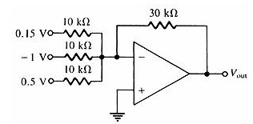

Q.1 Which of the following is/are variations of the basic summing amplifier?
A) Averaging amplifier
B) Scaling amplifier
C) Both of the above
D) None of the above
Ans : C
Q.2 Refer to the given figure. With the inputs shown, determine the output voltage?

A) 1.05 V
B) - 1.05 V
C) 0.35 V
D) - 0.35 V
Ans : A
Q.3 The standard supply voltage for an ordinary operational amplifier is ______?
A) 15 V
B) 13 V
C) 12 V
D) 10 V
Ans : C
Q.4 The type of feedback used for closed loop configuration is _______?
A) Positive Feedback
B) Negative Feedback
C) Both
D) None of the above
Ans : B
Q.5 A(n) ______ amplifier is a summing amplifier with a closed-loop gain equal to the reciprocal of the number of inputs?
A) Averaging
B) Scaling
C) Both
D) None of the above
Ans : A
Sources